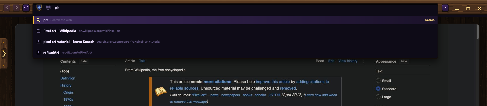
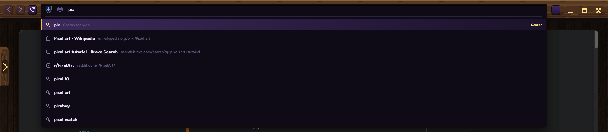
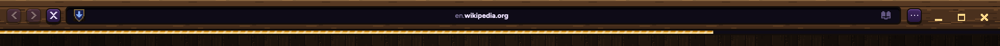
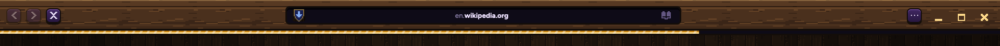
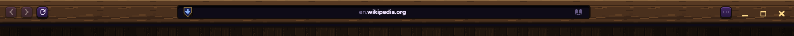
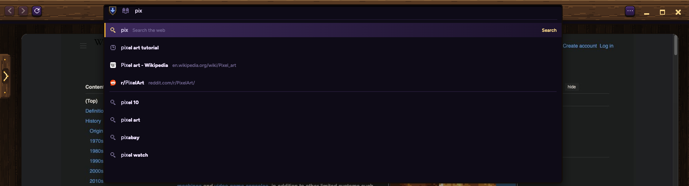
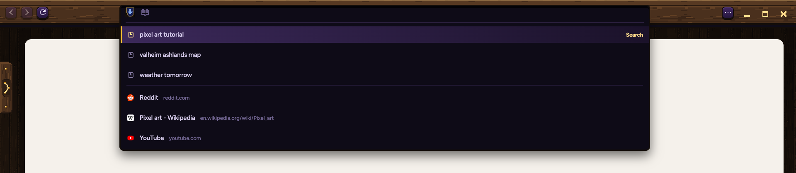

Why typing feels off: the list jumps, it forgets your searches, and it puts small words in a huge box. Then the fix, on the real band at your screen's width.
You type "pix". Your own pages show at once. A quarter second after you stop, the search guesses land and the list doubles. Every new letter throws the guesses away, so the list shrinks and grows like this all the way through a word.


Three more things in these two pictures:
It forgets your searches. "pixel art tutorial" was a search you made. It comes back as a page called "pixel art tutorial - Brave Search".
Small words, huge box. The list is 1600 wide but the words are 13.5. Everything sits in the left fifth; "Search" is way over on the right.
It starts late. Before the list can show, Samara swaps the page for a still picture of it. That took 44 to 564 ms in the test.
Measured while typing "pixel" at a normal speed. Each gold tick is a letter.
Purple: today, short while you type, then a sudden jump. Gold: proposed, it opens at its full size and stays still.



While you type it still slides out (your sheet 88 rule), but to 1280, not 1600. That's a 280 px slide instead of 840, so the bar barely moves under your eyes, and the list slides out with it as one piece.
Bigger words (15, up from 13.5), taller rows (40, like Chrome), each site's own icon, and your past search as one line with a clock. The guesses from your last letter stay until the new ones land, so nothing jumps.

It remembers you right away: your last three searches, then the sites you go to most. The ones you use often rise to the top; old ones fade out after a month.

| CHROME | FIREFOX | SAFARI | SAMARA TODAY | PROPOSED | |
|---|---|---|---|---|---|
| Steady list | Old rows stay until new ones land; a late answer never moves the top row | Old rows stay 400 ms; a row never swaps to a different kind | Top Hits arrive in bursts (people complain) | Wiped every letter | Old rows stay; top row only moves when you type |
| Remembers | Learns what you pick; fills in sites you typed before | Ranks by how often and how recently (one-month half-life); 5 recent searches | Top Hit from your history | Pages only, newest first; searches show as pages | Your searches as searches, ranked by often and recent |
| Before typing | Up to 8 suggestions | Top sites | Favourites | Nothing | 3 recent searches, then top sites |
| Rows | 40 tall, 8 at most | 10 at most | 34 tall, up to 13 | 40 tall, 9 at most | |
| Bar grows | A few px, merges with the list | 5 px each side | No | 760 to 1600 | 1000 to 1280 |
| Remove one | Shift+Delete | Shift+Delete | X on hover | No | Shift+Delete |
Opens on its own layer over the live page, like the tab list does, so there's no still picture and no wait.
Opens once, at full size, sliding down with the bar in pixel steps.
New guesses swap in place, word for word, in rows that are already there. Nothing slides, nothing grows.
The gold marker glides between rows as you arrow down.